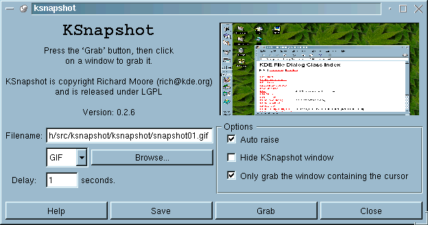

Next Previous Table of Contents
KSnapshot is a simple applet for taking screenshots. It is capable of capturing images of either the whole desktop or just a single window. The images can then be saved in a variety of formats.

KSnapshot is copyright Richard J. Moore 1997-1998 (rich@kde.org)
KSnapshot is released under the terms of the LGPL. As KSnapshot is free, there is no warranty.
Next Previous Table of Contents